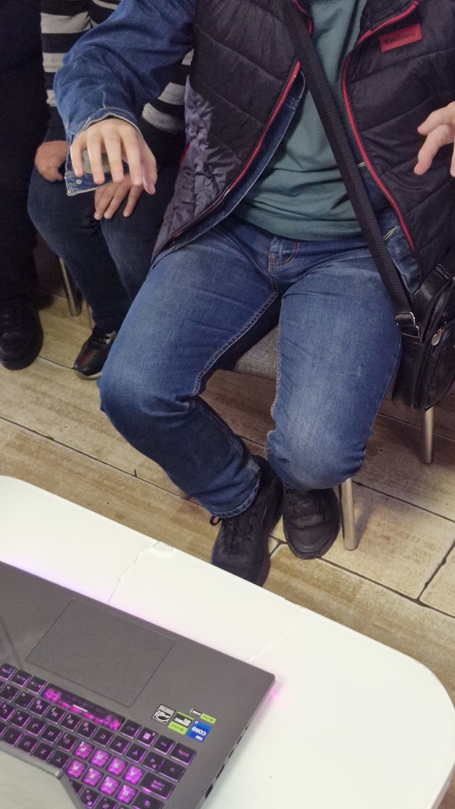
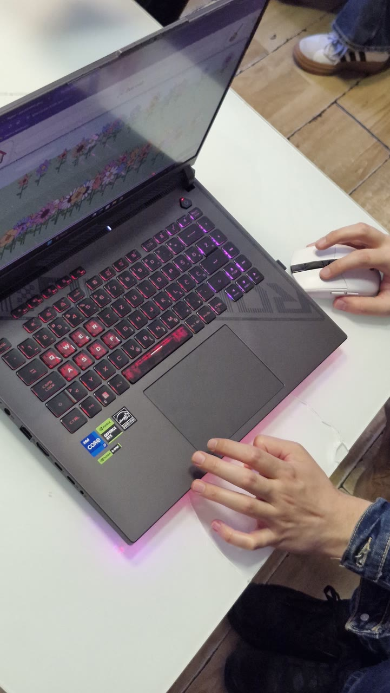
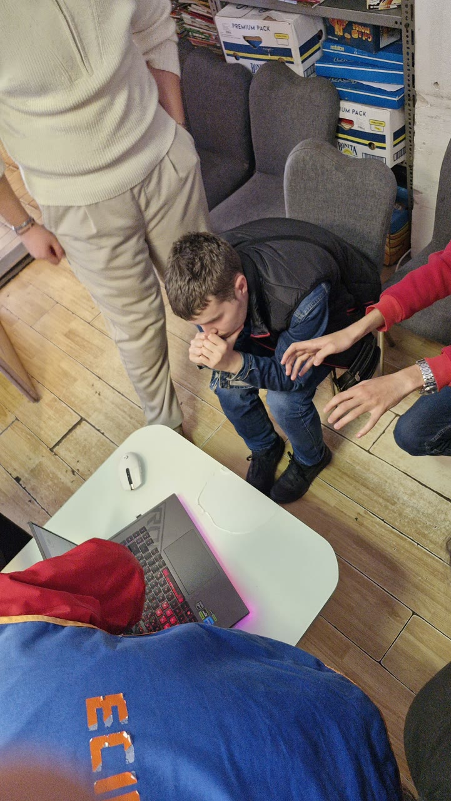

Radovi i primeri / Čas 4
Music Box
Nikola Pajić49/24
Čas 4
3 prikaza rada · Gradivo časa


U rukama korisnika · 23.10.2026.
3 kadrova sa posete udruženju · cela poseta ↗
Jedini rad kome se postavka promenila u udruženju
ViđenoNa času se svirao pokretom ruke pred kamerom. U udruženju je laptop završio na niskom stolu (kadrovi 13 i 29), korisnik na udaljenoj stolici, i u kadru 26 dodat je miš. Soba nije dala ni visinu ni slobodan prostor pred kamerom, pa se igra svela na rezervni put. To što rezervni put postoji jeste snaga rada; to što je on bio korišćen jeste rezultat probe. Ovo je i jedini rad koji se ne može dodati iz ruke u ruku.
Sledeća probaPodići laptop na visinu stola, osloboditi pola metra ispred kamere i izmeriti koliko traje sviranje pokretom pre nego što korisnik uzme miša.






Ista ruka, ostale nedelje
- Bez naziva nedelja 5 · 2 slike
- Music box nedelja 3 · 1 slika